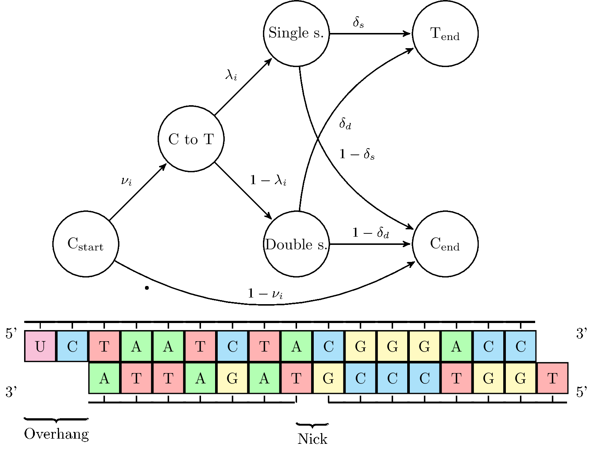

Important
Users with versions dating prior to June 12 2013 please update. A nasty bug that caused the statistical part of mapDamage to use half of the data for estimation of the damage parameters, sorry for the inconvenience.
Contents
Introduction
mapDamage2 is a computational framework written in Python and R, which tracks and quantifies DNA damage patterns among ancient DNA sequencing reads generated by Next-Generation Sequencing platforms.
mapDamage is developed at the Centre for GeoGenetics by the Orlando Group.
Requirements
- Python (version >= 2.6)
- Git
- R (version >= 2.15.1) must be present in your $PATH. Otherwise, only tables will be produced.
- pysam (version >= 0.6) python package, an interface for reading/writing SAM/BAM files
- Cython package, only necessary if pysam needs to be built
- gsl GNU scientific library (GSL)
- R libraries:
- inline
- gam
- Rccp
- RcppGSL
- ggplot2 (>=0.9.2)
Of note, the R libraries and the GSL library are only required for the statistical estimation of DNA damage parameters. seqtk is included in this package for fast computation of reference base composition, it is written by Heng Li and can be found at here at github.
Installation
mapDamage2 was successfully tested on GNU/Linux and MacOSX environments. For MacOSX, you can follow the following guidelines written by mapDamage users.
-
Install git:
Follow the instructions available at git (with installers/packages available for all major operating systems). - First time installation for mapDamage:
Clone the repository from GitHub
git clone --recursive https://github.com/ginolhac/mapDamage.git
go into the resulting folder
cd mapDamage
Continue the procedure by running the following command if you have administrator rights
sudo python setup.py install
otherwise install it locallypython setup.py install --user
then,$HOME/.local/binmust be in your PATH. - Install pysam:
Download the tarball archive for pysam. Untar the downloaded tar file and follow instructions in the pysam-XXX/INSTALL text file. Cython is necessary if pysam needs to be built.
It is recommend to check if the pysam installation seems okay before proceeding with the following commandpython -c "import pysam"
If nothing appears, then proceed. - Install R:
Follow the instructions available at R project (with installers/packages available for all major operating systems). - Install the R packages:
By running in a R console and selecting a CRAN mirror:install.packages("inline")install.packages("gam")install.packages("Rcpp")install.packages("ggplot2") - Install the GSL library gsl:
For Debian-based distros use the following command.sudo apt-get install libgsl0-dev
There should be a equivalent package for Mac using fink or macports. - Install RcppGSL:
In a R session do the followinginstall.packages("RcppGSL")
If the installation of RcppGSL ended with an unsuccessfully then, download the tarball at RcppGSL and install it with:install.packages("RcppGSL_0.2.0.tar.gz")
Note that if steps 4-6 fail for some reason, then it is possible to utilize mapDamage without the statistical function.
Update mapDamage
When mapDamage is already git-installed, you can get the latest version using git pull.go into the git folder
cd /path/to/mapDamageCheck updates at GitHub and download them if any
git pullIf there is no updates, the command returns:
Already up-to-date.If the last line looks like:
4 files changed, 49 insertions(+), 35 deletions(-)you can proceed with the next step.
Install the updated version if needed, by running the following command if you have administrator rights
sudo python setup.py install
otherwise install it locallypython setup.py install --user
News in version 2.0
- The main new feature is the approximate bayesian estimation of damage parameters.
The idea behind the summary approach in mapdamage 2.0 is depicted in this figure:
 - The following four key damage parameters are estimated in Bayesian manner:
- Lambda, the probability of termating an overhang.
- DeltaD, the cytosine deamination probability in double strand context.
- DeltaS, the cytosine deamination probability in single strand context.
- Theta, the mean difference rate between the reference and the sequenced sample not due to DNA damage.
- The
--rescaleparameter can be optionally used to rescale quality scores of likely damaged positions in the reads. A new BAM file is constructed by downscaling quality values for misincorporations likely due to ancient DNA damage according to their initial qualities, position in reads and damage patterns. - The program was rewritten in python to make it simpler and the dependency on bedtools was replaced by the use of pysam. The memory footprint is now negligible and runtime reduced by ca. 25%.
- It is now possible to filter out nucleotides with qualities inferior to a threshold defined by users, allowing users to reduce the impact of sequencing errors when counting misincorporations.
{kind=link}
Inputs
Two files are needed:
- A valid SAM/BAM file with a correct header, as argument to the
-ioption. - A FASTA file that contains reference sequences used for mapping reads, as argument to the
-roption.
References described in the SAM/BAM header and the FASTA file must be coherent, i.e, the references must have identical names and lengths. Extra sequences present in the FASTA header raise a warning but the program will proceed since all necessary references are available.
As an alternative, one can run only the plotting, statistic estimations or rescaling
on an already processed dataset. Use a combination of -d option followed by
a valid folder and the --plot-only, --stats-only or --rescale-only options.
Paired ends
We assume the pairs are facing inwards when counting the position specific misincorporations and rescaling quality scores. An additional assumption in the rescaling process is the pairs are non-overlapping. Make sure the pairing information in the BAM/SAM file is correct as we rely on the paired end information provided by the file. We advise not using non-overlapping paired ends coming from highly degraded samples (small template lengths) as they are likely contamination.
Output files
When all options are activated, 16 files are produced in the result folder.
Runtime_log.txt, log file with a summary of command lines used and timestamps.
For the plotting:
Fragmisincorporation_plot.pdf, a pdf file that displays both fragmentation and misincorporation patterns.Length_plot.pdf, a pdf file that displays length distribution of singleton reads per strand and cumulative frequencies of C->T at 5'-end and G->A at 3'-end are also displayed per strand.
Important remark: paired-ended reads are not considered for this analysis since the plot displays the distribution of read lengths and not insert sizes of paired-ended reads. For this last purpose, one can use the dedicated Picard tool CollectInsertSizeMetrics.misincorporation.txt, contains a table with occurrences for each type of mutations and relative positions from the reads ends.5pCtoT_freq.txt, contains frequencies of Cytosine to Thymine mutations per position from the 5'-ends.3pGtoA_freq.txt, contains frequencies of Guanine to Adenine mutations per position from the 3'-ends.dnacomp.txt, contains a table of the reference genome base composition per position, inside reads and adjacent regions.lgdistribution.txt, contains a table with read length distributions per strand.
{kind=link}
{kind=link}
For the statistical estimation:
Stats_out_MCMC_hist.pdf, MCMC histogram for the damage parameters and log likelihood.Stats_out_MCMC_iter.csv, values for the damage parameters and log likelihood in each MCMC iteration.Stats_out_MCMC_trace.pdf, a MCMC trace plot for the damage parameters and log likelihood.Stats_out_MCMC_iter_summ_stat.csv, summary statistics for the damage parameters estimated posterior distributions.Stats_out_post_pred.pdf, empirical misincorporation frequency and posterior predictive intervals from the fitted model.Stats_out_MCMC_correct_prob.csv, position specific probability of a C->T and G->A misincorporation is due to damage.dnacomp_genome.txt, contains the global reference genome base composition (computed by seqtk).- Rescaled BAM file, where likely post-mortem damaged bases have downscaled quality scores.
{kind=link}
{kind=link}
{kind=link}
Examples and datasets
A simple command line that would process the entire BAM file with plotting and statistic estimation is:
mapDamage -i mymap.bam -r myreference.fasta
To run the plotting part with a new scale to fit lower levels of DNA damages, 0.1 as y-limit instead of 0.3 by default:
mapDamage -d results_mydata -y 0.1 --plot-only
Running the rescaling of the quality scores taking into account the damage estimates:
mapDamage -i mymap.bam -r myreference --rescale
To run the statistical estimation using only the 5'-ends and with verbose output:
mapDamage -d results_mydata --forward --stats-only -v
For further examples and usage introduction see the supplementary material chapter in the mapDamage2.0 manuscript.
Usage
Usage: mapDamage [options] -i BAMfile -r reference.fasta
Use option -h or --help for help
Options:
--version show program's version number and exit
-h, --help show this help message and exit
Input files:
-i FILENAME, --input=FILENAME
SAM/BAM file, must contain a valid header, use '-' for reading a BAM from stdin
-r REF, --reference=REF
Reference file in FASTA format
General options:
-n DOWNSAMPLE, --downsample=DOWNSAMPLE
Downsample to a randomly selected fraction of the reads (if 0 < DOWNSAMPLE < 1),
or a fixed number of randomly selected reads (if DOWNSAMPLE >= 1). By default,
no downsampling is performed.
--downsample-seed Seed value to use for downsampling. See documentation for py module 'random' for default behavior.
-l LENGTH, --length=LENGTH
read length, in nucleotides to consider [70]
-a AROUND, --around=AROUND
nucleotides to retrieve before/after reads [10]
-Q MINQUAL, --min-basequal=MINQUAL
minimun base quality Phred score considered, Phred-33 assumed [0]
-d FOLDER, --folder=FOLDER
folder name to store results [results_FILENAME]
-f, --fasta Write alignments in a FASTA file
--plot-only Run only plotting from a valid result folder
-q, --quiet Disable any output to stdout
-v, --verbose Display progression information during parsing
Options for graphics:
-y YMAX, --ymax=YMAX
graphical y-axis limit for nucleotide misincorporation frequencies [0.3]
-m READPLOT, --readplot=READPLOT
read length, in nucleotides, considered for plotting nucleotide
misincorporations [25]
-b REFPLOT, --refplot=REFPLOT
the number of reference nucleotides to consider for ploting base
composition in the region located upstream and downstream of
every read [10]
-t TITLE, --title=TITLE
title used for both graph and filename [plot]
Options for the statistical estimation:
--rand=RAND Number of random starting points for the likelihood optimization [30]
--burn=BURN Number of burnin iterations [10000]
--adjust=ADJUST Number of adjust proposal variance parameters iterations [10]
--iter=ITER Number of final MCMC iterations [50000]
--forward=FORWARD Using only the 5' end of the seqs [False]
--reverse=REVERSE Using only the 3' end of the seqs [False]
--fix-disp=FIX_DISP Fix dispersion in the overhangs [True]
--diff-hangs The overhangs are different for 5' and 3' [False]
--fix-nicks=FIX_NICKS
Fix the nick frequency vector nu else estimate it with GAM [False]
--jukes-cantor Use Jukes Cantor instead of HKY85
--single_stranded=SINGLE_STRANDED
Single stranded protocol [False]
--seq-length=SEQ_LENGTH
How long sequence to use from each side [12]
--stats-only Run only statistical estimation from a valid result folder
--rescale Rescale the quality scores in the BAM file using the output from
the statistical estimation
--rescale-only Run only rescaling from a valid result folder
--no-stats Disabled statistical estimation, active by default
Description of tables
misincorporation table
This file looks like:
# table produced by mapDamage version 2.0
# using mapped file hits_sort_mts.bam and NC_012920.fasta as reference file
# Chr: reference from sam/bam header, End: from which termini of DNA sequences, Std: strand of reads
Chr End Std Pos A C G T Total G>A C>T A>G T>C A>C A>T C>G C>A T>G T>A G>C G>T A>- T>- C>- G>- ->A ->T ->C ->G S
NC_012920.1 3p + 1 424 579 201 424 1628 48 16 3 5 1 0 2 1 0 2 1 0 0 0 0 0 4 4 1 1 0
NC_012920.1 3p + 2 466 535 213 404 1618 30 12 2 1 0 1 0 0 3 3 1 0 0 0 0 0 2 6 5 7 0
NC_012920.1 3p + 3 514 463 223 417 1617 35 15 3 1 1 0 0 0 1 0 1 1 0 0 0 2 9 4 4 4 0
NC_012920.1 3p + 4 514 483 221 400 1618 30 11 3 4 0 1 1 0 0 1 0 1 1 0 0 2 5 5 8 2 0
The first lines that start by a hash contain information about the options used while processing the data.
Then, the table contains occurrences of the 12 mutation type + 4 deletions + 4 insertions +
soft-clipping for each combination of reference (Chr column), strand (Std column) , end (End column) and position (Pos column).
In Z->X, Z comes from the reference, X is the nucleotide from reads. The columns A, C, G and T are the respective reference base count
and Total is the sum of the four reference nucleotides. Frequencies depicted in Fragmisincorporation_plot.pdf file are computed per
position as follows
#occurrences of mutations / #occurrences of the reference nucleotide
in order to compensate for reference base composition bias along the positions.
In this example, for G>A substitutions at the first base from the 3'-ends and for the positive strand:
48 / 201 = 0.238806
The Fragmisincorporation plot sums up misincorporations for all references and strand orientations, finally displays the frequencies per sequencing position.
5p means reads analyzed from their 5'-ends and are depicted at the bottom left.
3p means reads analyzed from their 3'-ends and are depicted at the bottom right.
Remark concerning soft-clipping:
Soft-clipped bases are bases located at read extremities that are NOT aligned to the reference. Those bases are not taken into account and alignments are computed on aligned bases. However, the soft-clipped bases are recorded and displayed as an orange line as a diagnostic for users. Even if, the positions for those bases are different from positions of all misincorporations, they should warn users that reads should be trimmed if soft-clipped base frequencies is high.
dnacomp table
Example table below:
# table produced by mapDamage version 2.0
# using mapped file hits_sort_mts.bam and NC_012920.fasta as reference file
# Chr: reference from sam/bam header, End: from which termini of DNA sequences, Std: strand of reads
Chr End Std Pos A C G T Total
NC_012920.1 3p + -70 113 77 43 181 414
NC_012920.1 3p + -69 178 140 97 233 648
NC_012920.1 3p + -68 230 145 98 219 692
NC_012920.1 3p + -67 217 157 76 272 722
NC_012920.1 3p + -66 224 188 88 239 739
NC_012920.1 3p + -65 244 165 104 262 775
NC_012920.1 3p + -64 223 185 102 288 798
The first lines that start by a hash contain information about the options used while processing the data.
Then, the table contains occurrences for each nucleotides, per reference (Chr column),
per strand (Std column) , per end (End column) and per position (Pos column).
At a given position, base composition is recorded either for the reference or for reads depending on the position and direction. The following table details which sequences and coordinates are used by default:
| Positions | 5p | 3p |
|---|---|---|
| negative values | reference, -10 to -1 | reads, -25 to -1 |
| positive values | reads, +1 to +25 | reference, +1 to +10 |
Stats_out_MCMC_iter_summ_stat table
This table contains the MCMC output of the five model parameters (depending on options) and log likelihood. The mean, standard deviation and quantiles per 2.5% interval
of the MCMC posterior simulations are reported. The
acceptance ratio (ratio of acceptances in the MCMC iterations) for each model parameter is calculated and depicted in the file and should be around 0.2. The companion file Stats_out_MCMC_iter.csv contains all the values obtained for each MCMC iteration and is available in graphical format as a histogram or a traceplot.
Example table below (the file is actually comma separated, here depicted with tabulations for clarity purposes):
{kind=link}
{kind=link}
Theta DeltaD DeltaS Lambda Rho LogLik
Mean 0.0129715432214025 0.0276128283764782 0.506870702430984 0.236778993065734 0.0429440323801133 -290.436006736216
Std. 0.000727998242592221 0.0016991302193519 0.0186911963483404 0.0112842920128649 0.0061180619558739 1.59627579978557
Acceptance ratio 0.1659 0.28692 0.17708 0.17222 0.21354 0.6781
0% 0.010343780887111 0.0200009808935262 0.443618434348717 0.196608727957609 0.024062021508867 -303.394224826161
2.5% 0.0115779148051722 0.0242216196897948 0.471593745448078 0.215033292540976 0.0316283681609979 -294.415675536748
5% 0.0117929060844704 0.0247964028136441 0.476538261177338 0.218032838581406 0.0334894928201135 -293.50800575224
7.5% 0.0119301611221827 0.0251693761425478 0.480224681410536 0.220351157627141 0.0345977332183658 -292.980765571483
10% 0.0120425513929948 0.0254336747705529 0.48309367716994 0.222245004085287 0.0354838414161916 -292.586815783461
12.5% 0.0121442465603967 0.0256581391709088 0.485339023472775 0.223852846490496 0.0361775294966489 -292.277395952081
15%...
.....
Stats_out_MCMC_correct_prob table
This table contains the position-specific probability of observing a C->T or a G->A due to a post-mortem damage.
Example table below (the file is actually comma separated, here depicted with tabulations for clarity purposes):
Position C.T G.A
1 1 0.980784246710695 0.65527195218869
2 2 0.97568346676245 0.71352845563181
3 3 0.969521194936301 0.743638120957285
4 4 0.962170583850572 0.766805824762406
5 5 0.953542075730188 0.787010580221663
6 6 0.943631337701685 0.803957830256353
7 7 0.932671721032529 0.81529717262592
8 8 0.921048902653476 0.82189320180069
9 9 0.909252012734666 0.825047159166101
10...
.....
Graphical outputs
Visualizing damage patterns
Sample E522. The four upper mini-plots show the base frequency outside and in the read (the open grey box corresponds to the read). The bottom plots are the positions' specific substitutions from the 5" (left) and the 3" end (right). See Schuenemann et al. (2011) for more detailed information regarding the original data.
Sample E522. The upper two plots are histograms of the read lengths. The lower two plots are the empirical cumulative frequency of C->T and G->A misincorporations, normalized by the first 70 positions. See Schuenemann et al. (2011) for more detailed information regarding the original data.
Quantification of damage patterns
Sample E522.The empirical misincorporation frequencies and simulated posterior predictive intervals from the fitted model are depicted. See Schuenemann et al. (2011) for more detailed information regarding the original data.
Sample E522. Simulated posterior distributions of the five model parameters and log likelihood. See Schuenemann et al. (2011) for more detailed information regarding the original data.
Sample E522. MCMC trace plots of the five model parameters and log likelihood. See Schuenemann et al. (2011) for more detailed information regarding the original data.
Citation
If you use this program, please cite the following publication:
Jónsson H, Ginolhac A, Schubert M, Johnson P, Orlando L.
mapDamage2.0: fast approximate Bayesian estimates of ancient DNA damage parameters.
Bioinformatics 2013. 23rd April 2013. doi: 10.1093/bioinformatics/btt193
The original mapDamage1 is described in the following article:
Ginolhac A, Rasmussen M, Gilbert MT, Willerslev E, Orlando L.
mapDamage: testing for damage patterns in ancient DNA sequences.
Bioinformatics 2011 27 (15):2153-2155
Schuenemann VJ, Bos K, DeWitte S, Schmedes S, Jamieson J, Mittnik A, Forrest S, Coombes BK, Wood JW, Earn DJ, White W, Krause J, Poinar HN. Targeted enrichment of ancient pathogens yielding the pPCP1 plasmid of Yersinia pestis from victims of the Black Death. Proc Natl Acad Sci USA. 2011 108:E746-52. doi: 10.1073/pnas.1105107108.
FAQ
Q: I got this error: could not find function "ggtitle"
A: update your ggplot2 package to at least version 0.9.2 by running:
update.packages("ggplot2")
and selecting a CRAN mirror
Q: Why do I do not get the Lengh_plot.pdf file? (or only a blank page)
A: This is likely you are using paired-end reads. The length distribution is performed only for single-end reads using their lengths. In theory, paired-end reads could also be used but we think this does not represent the real insert size and could be misleading. Best results are obtained by using merged paired-end reads (mapped as single-end), so when the full inserts are sequenced.
Q: How to clone the development version from github?
A: Use the following commands
git clone --recursive https://github.com/ginolhac/mapDamage.git
Q: Where is the original version of mapDamage?
A: The original web page with examples, datasets and result files is here:
http://geogenetics.ku.dk/publications/mapdamage/
Contact
Please report bugs and suggest possible improvements to Aurélien Ginolhac, Mikkel Schubert or Hákon Jónsson by email: aginolhac at snm.ku.dk, MSchubert at snm.ku.dk or jonsson.hakon at gmail.com.